Annotations in Cytoscape are stored as a set of ontologies (e.g. the Gene Ontology, or GO). An ontology consists of a set of controlled vocabulary terms that annotate the objects. For example, using the Gene Ontology, the Saccharomyces Cerevisiae CDC55 gene has a biological process described as “protein biosynthesis”, to which GO has assigned the number 6412 (a GO ID).
GO 8150 biological_process
GO 7582 physiological processes
GO 8152 metabolism
GO 44238 primary metabolism
GO 19538 protein metabolism
GO 6412 protein biosynthesis
Graphical View of GO Term 6412: protein biosynthesis
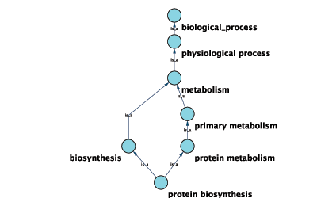
Cytoscape can use this ontology DAG (Directed Acyclic Graph) to annotate objects in networks. The Ontology Server (originally called "BioDataServer") is a Cytoscape feature which allows you to load, navigate, and assign annotation terms to nodes and edges in a network. Cytoscape 2.4 now has an enhanced GUI for loading ontology and associated annotation, enabling you to load both local and remote files.
The standard file formats used in Cytoscape Ontology Server are OBO and Gene Association. The GO website details these file formats:
Ontologies and Definitions: http://www.geneontology.org/GO.downloads.shtml#ont
Current Annotations: http://www.geneontology.org/GO.current.annotations.shtml
An OBO file is the ontology DAG itself. This file defines the relationships between ontology terms. Cytoscape 2.4 and onwards can load all ontology files written in OBO format. The full listing of ontology files are available from the Open Biomedical Ontologies (OBO) website:
OBO Ontology Browser: http://obo.sourceforge.net/browse.html
Sample OBO File - gene_ontology.obo: http://www.geneontology.org/ontology/gene_ontology_edit.obo
format-version: 1.2 date: 27:11:2006 17:12 saved-by: midori auto-generated-by: OBO-Edit 1.002 subsetdef: goslim_generic "Generic GO slim" subsetdef: goslim_goa "GOA and proteome slim" subsetdef: goslim_plant "Plant GO slim" subsetdef: goslim_yeast "Yeast GO slim" subsetdef: gosubset_prok "Prokaryotic GO subset" default-namespace: gene_ontology remark: cvs version: $Revision: 5.49 $ [Term] id: GO:0000001 name: mitochondrion inheritance namespace: biological_process def: "The distribution of mitochondria, including the mitochondrial genome, into daughter cells after mitosis or meiosis, mediated by interactions between mitochondria and the cytoskeleton." [GOC:mcc, PMID:10873824, PMID:11389764] synonym: "mitochondrial inheritance" EXACT [] is_a: GO:0048308 ! organelle inheritance is_a: GO:0048311 ! mitochondrion distribution [Term] id: GO:0000002 name: mitochondrial genome maintenance namespace: biological_process def: "The maintenance of the structure and integrity of the mitochondrial genome." [GOC:ai] is_a: GO:0007005 ! mitochondrion organization and biogenesis
Cytoscape provides a list of ontologies available in OBO format. If an Internet connection is available, Cytoscape will import ontology and annotation files directly from the remote source. The table below lists the included ontologies.
Table 27.
Ontology Name | Description |
Gene Ontology Full | This data source contains a full-size GO DAG, which contains all GO terms. This OBO file is written in version 1.2 format. |
Generic GO slim | A subset of general GO Terms, including higer-level terms only. |
Yeast GO slim | A subset of GO Terms for annotating Yeast data sets maintained by SGD. |
Molecule role (INOH Protein name/family name ontology) | A structured controlled vocabulary of concrete and abstract (generic) protein names. This ontology is a INOH pathway annotation ontology, one of a set of ontologies intended to be used in pathway data annotation to ease data integration. This ontology is used to annotate protein names, protein family names, and generic/concrete protein names in the INOH pathway data. INOH is part of the BioPAX working group. |
Event (INOH pathway ontology) | A structured controlled vocabulary of pathway-centric biological processes. This ontology is a INOH pathway annotation ontology, one of a set of ontologies intended to be used in pathway data annotation to ease data integration. This ontology is used to annotate biological processes, pathways, and sub-pathways in the INOH pathway data. INOH is part of the BioPAX working group. |
Protein-protein interaction | A structured controlled vocabulary for the annotation of experiments concerned with protein-protein interactions. |
Pathway Ontology | The Pathway Ontology is a controlled vocabulary for pathways that provides standard terms for the annotation of gene products. |
PATO | PATO is an ontology of phenotypic qualities, intended for use in a number of applications, primarily phenotype annotation. For more information, please visit the PATO wiki (http://www.bioontology.org/wiki/index.php/PATO:Main_Page). |
Mouse pathology | The Mouse Pathology Ontology (MPATH) is an ontology for mutant mouse pathology. This is Version 1. |
Human disease | This ontology is a comprehensive hierarchical controlled vocabulary for human disease representation. For more information, please visit the Disease Ontology website (http://diseaseontology.sourceforge.net/). |
Although Cytoscape can import all kinds of ontologies in OBO format, annotation files are associated with specific ontologies. Therefore, you need to provide the correct ontology-specific annotation file to annotate nodes/edges/networks in Cytoscape. For example, while you can annotate human network data using the GO Full ontology with human Gene Association files, you cannot use a combination of the human Disease Ontology file and human Gene Association files, because the Gene Association file is only compatible with GO.
Relationships between ontology terms are usually represented as Directed Acyclic Graphs (DAGs). This is a special case of a network (or graph), where nodes are ontology terms and edges are relationships between terms. Originally, Cytoscape used a special data structure called BioDataServer to store ontology DAGs. Starting in version 2.4, ontology data will now be stored in the same data structure as normal networks. This enables users and plugin writers to visualize, browse and manipulate ontology DAGs just like other networks. The following is an example of visualization of an ontology DAG (Generic GO Slim):
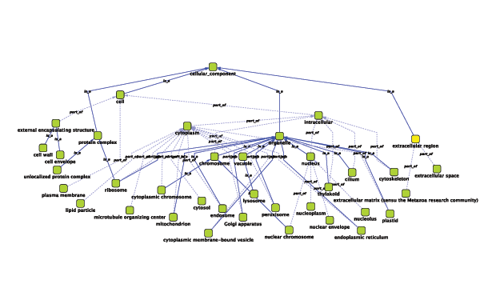
Every ontology term and relationship can have attributes. In the OBO files, ontology terms have optional fields such as definition, synonyms, comments, or cross-references. These fields will be imported as node attributes. To browse those attributes, please use the attribute browser (see the example below):
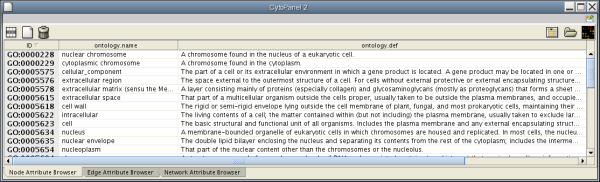
The Gene Association (GA) file provides annotation only for the Gene Ontology. It is a species-specific annotation file for GO terms. Gene Association files will only work with Gene Ontologies and NOT others!
Sample Gene Association File (gene_association.sgd - annotation file for yeast):
SGD S000003916 AAD10 GO:0006081 SGD_REF:S000042151|PMID:10572264 ISS P aryl-alcohol dehydrogenase (putative) YJR155W gene taxon:4932 20020902 SGD SGD S000005275 AAD14 GO:0008372 SGD_REF:S000069584 ND C aryl-alcohol dehydrogenase (putative) YNL331C gene taxon:4932 20010119 SGD
If you have a network file and an attribute file, they should have a common key to map attributes onto network data. If those two do not have a common key, you need to do an extra step to add a shared key. The following is a quick tutorial to learn how to use Gene Name Mapping files.
Download name mapping files. Mapping files are available at: http://chianti.ucsd.edu/kono/genenamemapping.html. In this tutorial, we are going to use dictionary_no_prefix.zip, which is a file set without prefixes for each gene names. Unzip the archive.
Load sample network file. Open network import dialog from File-->Import-->Network (multiple file types)... Then click URL radio button and import Human Protein-Protein: Rual et al. (Subnetwork for tutorial).
Open attribute table import dialog from File-->Import-->Attribute from Table.
Select human.dic_cyto.txt as the input file.
Check "Show Text File Import Options and click Transfer first line as attribute names checkbox.
<listitem>Uncheck "Show Text File Import Options
and check Mapping Options. </listitem>Select EntrezGene as Primary Key.
Right-click on EntrezGene column name and set the type to String.
Do the same for HGNC.
Right-click on Other Aliases and select List as the data type.
Check Other Aliases as Alias (under "Alias?" checkboxes).
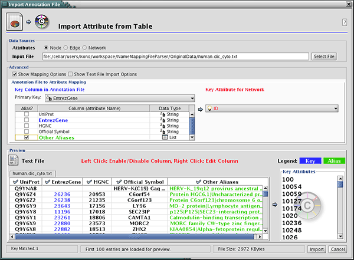
Press Import. The network has new names in the text file as attributes.
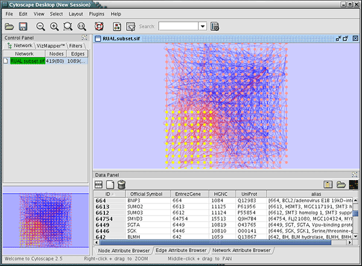
At this point, nodes have multiple names including HGNC, UniProt, and EntrezGene ID. You can import other attribute files using these keys. These imported names (IDs) are useful when you import GO Annotation.
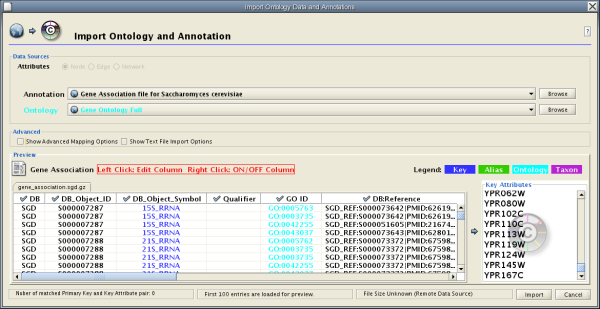
Cytoscape 2.4 provides a graphical user interface to import both ontology and annotation files at the same time.
For convenience, Cytoscape has a list of URLs for commonly used ontology data and a complete set of Gene Association files. To import Gene Ontology and Gene Association files for the loaded networks, please follow these steps:
Important: All data sources in the preset list are remote URLs, meaning a network connection is required!
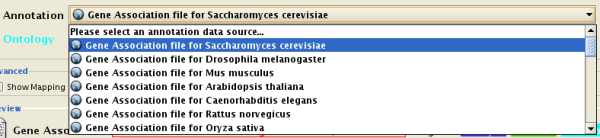
Select File → Import → Ontology and Annotation... to open the "Import Ontology and Annotation" window. From the Annotation dropdown list, select a gene association file for your network. For example, if you want to annotate the yeast network, select "Gene Association file for Saccharomyces cerevisiae".
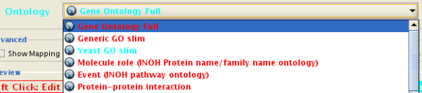
When Cytoscape finishes importing files, the import window will be automatically closed. All attributes mapped by this function have the prefix "annotation" and look like this: annotation.[attribute_name]. All ontologies will be added to the end of the Ontology DAGs branch in the Network Manager.
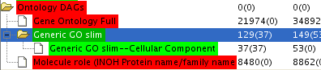
Ontology DAGs have some attributes associated with the terms. All attributes associated with ontology terms will have the prefix ontology. They have at least one attribute: ontology.name. For more detailed information about attributes for ontology DAGs, please read the official OBO specification document.
Network Data
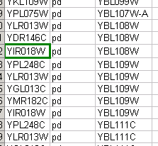
Ontology Data
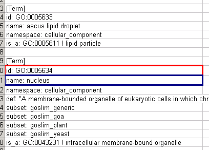
Annotation Data
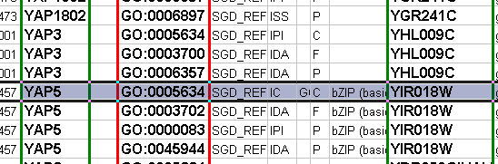
Mapping Result
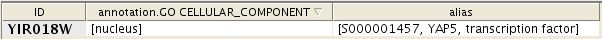
If you want to map ontology terms onto network objects, you need to create a custom annotation file. The annotation file should contain at least 2 columns: a primary key and an ontology term ID. The primary key is the value used for mapping between the annotation file and network. Usually, the node/edge ID is used as the primary key, but you may choose any of the available attributes. The Ontology term ID is the key used for mapping between the annotation file and the ontology DAG. Using these data sources, you can annotate network objects in Cytoscape.
Suppose you have a small network:
node_1 pp node_2 node_3 pp node_1 node_2 pp node_3
and you want to annotate this network with Ontology A, which is an ontology DAG available in OBO format. In this case, you need an annotation table file that looks like this:
node_1 OA_0000232 node_2 OA_0000441 node_3 OA_0000702
where OA_*** represents an ontology term ID. This example is a file with the minimum necessary number of columns; however, you can include additional columns that will appear as additional node attributes.
Some ontologies will be used to annotate edges or networks. For example, the Protein-protein interaction ontology is a controlled set of terms for annotating interactions between proteins, so ontology terms should be mapped onto edges (see example below).
node_1 (pp) node_2 MI:0445 node_3 (pp) node_1 MI:0046 node_2 (pp) node_3 MI:0346
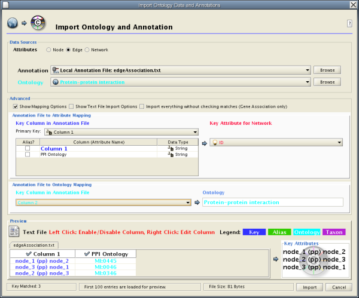
The basic operation of the Ontology and Annotation Import function is the same as that of the Attribute Table Import. The main difference is that you need to specify an additional key for mapping:
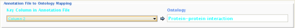
By selecting a column from the "Key Column in Annotation File" dropdown list, you can specify the key for mapping between ontology terms and the annotation file.